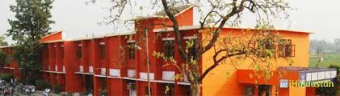

Guru Nanak Mission Public School
Aspire and Achieve
our vision
Facilities
Academic Calender
Extra Curricular Activities
Picture Gallery

Welcome to GNMPS.................
GURU NANAK MISSION PUBLIC SCHOOL, PAONTA SAHIB (H.P.) is a Sr. Sec. & Co-educational Institution having classes from Nur. to Xll with about 3300 students on its roll.
It has the pride to nestle In a serene and holy town enticing multitude of people from all over the country and even abroad with its rich past associated with the tenth guru GURU
GOBIND SINGH JI.
The senior school is located at Shubh Khera on Paonta-Bangran road, away from the hustle and bustle, amid the lush green surroundings. It is about 1.5 km away from the general bus stand.
The school has its own giant campus with spacious triple/double storey blocks for Primary and Senior wings.
Besides, the senior school campus, there are two more campuses one near Housing Board Colony at Devi Nagar having classes upto class Vlll
and the other one exclusively for Pre primary classes at Bangran Road, a few yards away from the senior school. Apart from these, we have one
sisterly branch at Dalla-Bhogpur, Distt. Jalandhar (Punjab), having classes from Nur to X. The school is run by a charitable trust viz. Guru Nanak Mission Hospital and Education Trust of
India (Regd.) Ambala City. The school established
in 1978, is the most pioneering unit of the trust founded by Late S. Purushottam Singh Anand who cherished the dream to provide quality
education to the students with minimum charges.
New Registration? Click here